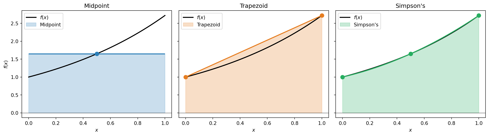
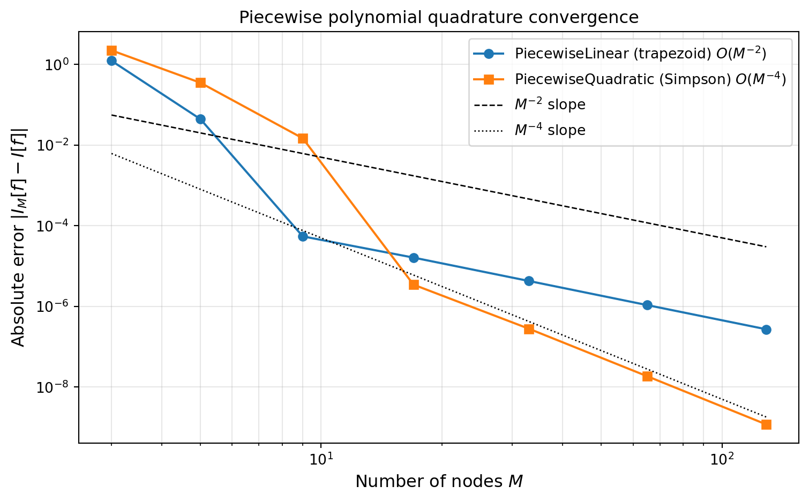

import numpy as np
np.random.seed(42)
import matplotlib.pyplot as plt
from scipy import stats
from pyapprox.util.backends.numpy import NumpyBkd
from pyapprox.surrogates.affine.univariate.piecewisepoly import (
PiecewiseLinear,
PiecewiseQuadratic,
DynamicPiecewiseBasis,
EquidistantNodeGenerator,
)
from pyapprox.tutorial_figures._quadrature import plot_newton_cotes, plot_pw_quad_convergence
bkd = NumpyBkd()Piecewise Polynomial Quadrature: Rectangle, Trapezoid, and Simpson’s Rules
PyApprox Tutorial Library
Derive Newton-Cotes rules from polynomial interpolation, prove their error bounds via Taylor expansion, and verify algebraic convergence of composite quadrature.
TipDownload Notebook
Learning Objectives
After completing this tutorial, you will be able to:
- Derive the rectangle, trapezoid, and Simpson’s rules from polynomial interpolation
- Prove the leading error term for the trapezoid rule using the mean value theorem
- Prove the leading error term for Simpson’s rule using Taylor expansion and explain why odd-derivative cancellation gives one extra degree of exactness
- Construct composite quadrature rules with
PiecewiseLinearandPiecewiseQuadratic - Verify the \(O(h^2)\) and \(O(h^4)\) algebraic convergence rates
Prerequisites
This tutorial assumes familiarity with basic calculus (integrals, Taylor series) and NumPy array operations. No prior exposure to quadrature or approximation theory is required.
Setup
The Quadrature Problem
Given a function \(f : [a, b] \to \mathbb{R}\) we want to approximate the integral
\[ I[f] = \int_a^b f(x)\, dx \]
without evaluating infinitely many function values. A quadrature rule replaces the integral with a weighted sum over \(M\) carefully chosen nodes \(\{x^{(n)}\}_{n=1}^M\):
\[ I_M[f] = \sum_{n=1}^{M} w_n\, f\!\left(x^{(n)}\right) \approx I[f]. \]
The quality of the approximation depends on both the weights \(w_n\) and the node locations \(x^{(n)}\). The central question of this tutorial is: how should we choose them?
Newton-Cotes Rules
The classical Newton-Cotes approach is to fit an \(N\)-degree interpolating polynomial \(p_N\) to the function at \(N+1\) equally spaced nodes, then integrate \(p_N\) exactly:
\[ I_N[f] = \int_a^b p_N(x)\,dx = \sum_{n=0}^N f(x^{(n)})\, w_n, \qquad w_n = \int_a^b \phi_n(x)\,dx, \]
where \(\phi_n\) are the Lagrange basis polynomials.
Midpoint, Trapezoid, and Simpson’s Rules
For a single interval \([a, b]\) with \(h = b - a\), the three most common rules are:
\[ I_M^{\text{mid}}[f] = h\, f\!\left(\frac{a+b}{2}\right), \qquad I_M^{\text{trap}}[f] = \frac{h}{2}\bigl[f(a) + f(b)\bigr], \qquad I_M^{\text{simp}}[f] = \frac{h}{6}\!\left[f(a) + 4f\!\left(\frac{a+b}{2}\right) + f(b)\right]. \]
Each rule is exact for polynomials up to a certain degree, called its polynomial exactness (or algebraic degree of precision):
| Rule | Nodes per interval | Exactness | Leading error |
|---|---|---|---|
| Midpoint | 1 | degree 1 | \(\tfrac{h^3}{24} f''(\xi)\) |
| Trapezoid | 2 | degree 1 | \(-\tfrac{h^3}{12} f''(\xi)\) |
| Simpson’s | 3 | degree 3 | \(-\tfrac{h^5}{90} f^{(4)}(\xi)\) |
Simpson’s rule gains one extra degree of exactness because the midpoint cancellation happens to annihilate the cubic term.
def f_demo(x):
return np.exp(x)
a, b = 0.0, 1.0
fig, axs = plt.subplots(1, 3, figsize=(14, 4), sharey=True)
plot_newton_cotes(axs, f_demo, a, b)
plt.tight_layout()
plt.show()
Error Analysis: From Interpolation to Quadrature
Since Newton-Cotes rules integrate an interpolating polynomial exactly, the quadrature error equals the integral of the interpolation error.
Polynomial Interpolation Error
For an \((N+1)\)-times differentiable function \(f\) interpolated at \(N+1\) nodes \(x^{(0)}, \ldots, x^{(N)} \in [a,b]\), the interpolation error at any point \(x\) is
\[ f(x) - p_N(x) = \frac{f^{(N+1)}(\xi(x))}{(N+1)!}\, \pi_N(x), \]
where \(\xi(x) \in [a,b]\) depends on \(x\) and \(\pi_N(x) = \prod_{n=0}^N (x - x^{(n)})\) is the node polynomial.
Quadrature Error Formula
Integrating both sides, the quadrature error is
\[ E_N[f] = \int_a^b \frac{f^{(N+1)}(\xi(x))}{(N+1)!}\, \pi_N(x)\, dx. \]
To extract \(f^{(N+1)}\) from the integral we need the mean value theorem for integrals:
TipMean Value Theorem for Integrals
If \(\varphi : [a,b] \to \mathbb{R}\) is continuous and \(g\) is integrable and does not change sign on \([a,b]\), then there exists \(c \in (a,b)\) such that
\[ \int_a^b \varphi(x)\, g(x)\, dx = \varphi(c) \int_a^b g(x)\, dx. \]
Trapezoid Rule Error Derivation
The trapezoid rule uses \(N = 1\), with nodes \(x^{(0)} = a\) and \(x^{(1)} = b\). The quadrature error formula gives
\[ E_1[f] = \int_a^b \frac{f''(\xi(x))}{2!}\, (x - a)(x - b)\, dx. \]
The node polynomial \((x - a)(x - b)\) does not change sign on \([a, b]\) (it is non-positive on the entire interval), so the mean value theorem applies:
\[ E_1[f] = \frac{f''(c)}{2} \int_a^b (x - a)(x - b)\, dx \]
for some \(c \in (a, b)\). Evaluating the integral:
\[ \int_a^b (x - a)(x - b)\, dx = -\frac{(b - a)^3}{6}. \]
Therefore
\[ \boxed{E_1[f] = -\frac{f''(c)\,(b - a)^3}{12}} \]
for some \(c \in (a,b)\). The error is \(O(h^3)\) for a single panel of width \(h = b - a\).
Simpson’s Rule Error Derivation
Simpson’s rule uses \(N = 2\) with nodes \(x_0 = a\), \(x_1 = (a+b)/2\), \(x_2 = b\). Let \(\Delta = (b - a)/2\) so that \(x_0 = x_1 - \Delta\), \(x_2 = x_1 + \Delta\).
Naively, the interpolation error formula with \(N = 2\) gives an \(f^{(3)}\) term, suggesting exactness only for degree 2. But Simpson’s rule is exact for degree 3 — the reason is a cancellation of odd derivatives. We prove this via Taylor expansion.
Taylor Expansion Around the Midpoint
Expand \(f\) at the endpoints around \(x_1\):
\[ f(x_0) = f(x_1) - \Delta f'(x_1) + \frac{\Delta^2}{2!} f''(x_1) - \frac{\Delta^3}{3!} f'''(x_1) + \frac{\Delta^4}{4!} f^{(4)}(x_1) - \cdots \]
\[ f(x_2) = f(x_1) + \Delta f'(x_1) + \frac{\Delta^2}{2!} f''(x_1) + \frac{\Delta^3}{3!} f'''(x_1) + \frac{\Delta^4}{4!} f^{(4)}(x_1) + \cdots \]
Adding these, all odd-derivative terms cancel:
\[ f(x_0) + f(x_2) = 2f(x_1) + \Delta^2 f''(x_1) + \frac{2\Delta^4}{4!} f^{(4)}(x_1) + \cdots \]
Simpson’s Formula
Substituting into the Simpson formula \(\frac{\Delta}{3}(f(x_0) + 4f(x_1) + f(x_2))\):
\[ \frac{\Delta}{3}\bigl(f(x_0) + 4f(x_1) + f(x_2)\bigr) = 2\Delta f(x_1) + \frac{\Delta^3}{3}f''(x_1) + \frac{\Delta^5}{36}f^{(4)}(x_1) + \cdots \]
Exact Integral
The Taylor expansion of the exact integral \(\int_{x_0}^{x_2} f(x)\,dx\) around \(x_1\) gives (integrating term by term, odd powers vanish by symmetry):
\[ \int_{x_0}^{x_2} f(x)\,dx = 2\Delta f(x_1) + \frac{\Delta^3}{3}f''(x_1) + \frac{\Delta^5}{60}f^{(4)}(x_1) + \cdots \]
The Error
Subtracting Simpson’s formula from the exact integral:
\[ \boxed{E_2[f] = -\frac{\Delta^5}{90}f^{(4)}(x_1) + O(\Delta^6)} \]
Since \(\Delta = (b-a)/2\), this is \(-\frac{(b-a)^5}{2880}f^{(4)}(x_1) + O((b-a)^6)\), i.e. \(O(h^5)\) per panel.
NoteWhy the Extra Degree of Exactness?
The \(f'''\) term cancels because the Simpson nodes are symmetric about the midpoint \(x_1\). This happens for any Newton-Cotes rule with an even number of intervals (\(N\) even): the rule integrates polynomials of degree \(N+1\) exactly, not just degree \(N\). The leading error involves \(f^{(N+2)}\) rather than \(f^{(N+1)}\).
Composite Quadrature and Convergence
To achieve high accuracy we subdivide \([a, b]\) into \(K\) panels of width \(h = (b-a)/K\) and apply a base rule on each panel. The composite rules inherit the single-panel error but summed over \(K\) panels, giving global errors:
\[ \lvert I[f] - I_M^{\text{comp,trap}}\rvert \leq \frac{(b-a)^3}{12 K^2}\max_{\xi\in[a,b]}\lvert f''(\xi)\rvert = O(h^2), \qquad \lvert I[f] - I_M^{\text{comp,simp}}\rvert \leq \frac{(b-a)^5}{180 K^4}\max_{\xi\in[a,b]}\lvert f^{(4)}(\xi)\rvert = O(h^4). \]
So increasing \(K\) by a factor of 10 decreases the trapezoid error by \(100\times\) and the Simpson error by \(10{,}000\times\). This is called algebraic (polynomial) convergence because the error decays as a power of \(1/K\).
PyApprox provides piecewise polynomial basis classes whose built-in quadrature rules give exactly these composite rules:
PiecewiseLinear\(\to\) trapezoid rule (weights = \([h/2, h, \ldots, h, h/2]\))PiecewiseQuadratic\(\to\) Simpson’s rule (weights follow the \(1, 4, 2, 4, \ldots, 1\) pattern)
We wrap these in DynamicPiecewiseBasis with an EquidistantNodeGenerator so that we can change the number of nodes dynamically.
def f_smooth(x):
"""Smooth test function: exponential."""
return np.exp(-x**2)
a, b = -3.0, 3.0
true_val = np.sqrt(np.pi) * (stats.norm.cdf(3 * np.sqrt(2)) - stats.norm.cdf(-3 * np.sqrt(2)))
node_gen = EquidistantNodeGenerator(bkd, (a, b))
# PiecewiseLinear quadrature = composite trapezoid
trap_rule = DynamicPiecewiseBasis(bkd, PiecewiseLinear, node_gen)
# PiecewiseQuadratic quadrature = composite Simpson's
simp_rule = DynamicPiecewiseBasis(bkd, PiecewiseQuadratic, node_gen)
Ms = np.array([3, 5, 9, 17, 33, 65, 129])
trap_errors, simp_errors = [], []
for M in Ms:
for rule, err_list in [(trap_rule, trap_errors), (simp_rule, simp_errors)]:
rule.set_nterms(M)
pts, wts = rule.quadrature_rule() # pts (1, M), wts (M, 1)
pts_np = bkd.to_numpy(pts[0])
wts_np = bkd.to_numpy(wts[:, 0])
approx = wts_np @ f_smooth(pts_np)
err_list.append(abs(approx - true_val))fig, ax = plt.subplots(figsize=(8, 5))
plot_pw_quad_convergence(ax, Ms, trap_errors, simp_errors)
plt.tight_layout()
plt.show()
NoteAlgebraic Convergence
Composite rules converge algebraically: doubling \(M\) reduces the error by a fixed factor that depends on the rule’s order. For the trapezoid rule (\(O(h^2)\)), doubling \(M\) cuts the error by roughly \(1/4\); for Simpson’s rule (\(O(h^4)\)), by roughly \(1/16\). The next tutorial introduces Gauss quadrature, which can achieve exponential convergence — the error decays as \(\sim C^{-M}\) for smooth functions. The difference is dramatic: 16 Gauss points can outperform hundreds of composite trapezoid points on a smooth integrand.
Key Takeaways
- A quadrature rule \(I_M[f] = \sum_n w_n f(x^{(n)})\) approximates an integral using \(M\) function evaluations; the rule is characterized by its nodes and weights.
- Newton-Cotes rules (midpoint, trapezoid, Simpson’s) use equally spaced nodes and integrate the interpolating polynomial exactly.
- The quadrature error equals the integral of the interpolation error. The mean value theorem for integrals extracts the derivative factor, giving the classical error formulas.
- Trapezoid rule: error \(O(h^3)\) per panel, \(O(h^2)\) composite.
- Simpson’s rule: error \(O(h^5)\) per panel, \(O(h^4)\) composite. The extra order comes from odd-derivative cancellation due to symmetric nodes.
- Composite rules achieve algebraic convergence — doubling \(M\) reduces the error by a fixed power.
Exercises
NoteExercises
Midpoint rule error. Adapt the trapezoid rule derivation to the midpoint rule (\(N=0\), single node at \((a+b)/2\)). Show that the node polynomial \((x - (a+b)/2)\) does not maintain a constant sign, so the mean value theorem does not apply directly. Instead, use the Taylor expansion approach to derive the leading error \(E_0[f] = \frac{h^3}{24}f''(\xi)\).
Polynomial exactness. Verify by hand that the trapezoid rule integrates \(f(x) = x\) exactly on \([0, 1]\) but makes a non-zero error on \(f(x) = x^2\). Repeat for Simpson’s rule with \(f(x) = x^3\) and \(f(x) = x^4\).
Convergence rate. Repeat the convergence study with \(f(x) = |x|\) on \([-1, 1]\) (which is Lipschitz but not \(C^2\)). How does the observed rate compare to the theoretical \(O(h^2)\) for the trapezoid rule?
Richardson extrapolation. The trapezoid error has the form \(I[f] = I_M^{\text{trap}} + c h^2 + O(h^4)\). Combine \(I_M^{\text{trap}}\) and \(I_{2M}^{\text{trap}}\) to eliminate the \(h^2\) term and obtain a higher-order estimate. What rate does the combined estimate achieve? (Hint: this is how Simpson’s rule can be derived from the trapezoid rule.)
Next Steps
- Gauss Quadrature: Optimal Nodes from Orthogonal Polynomials — Free the node locations to achieve exponential convergence for smooth functions
- Piecewise Polynomial Interpolation — Local basis functions that handle discontinuous functions gracefully